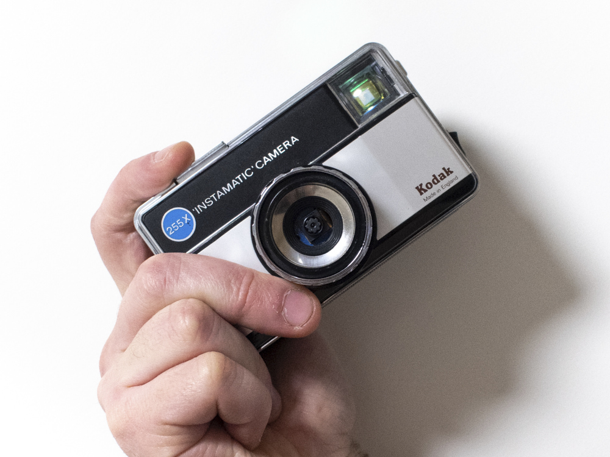
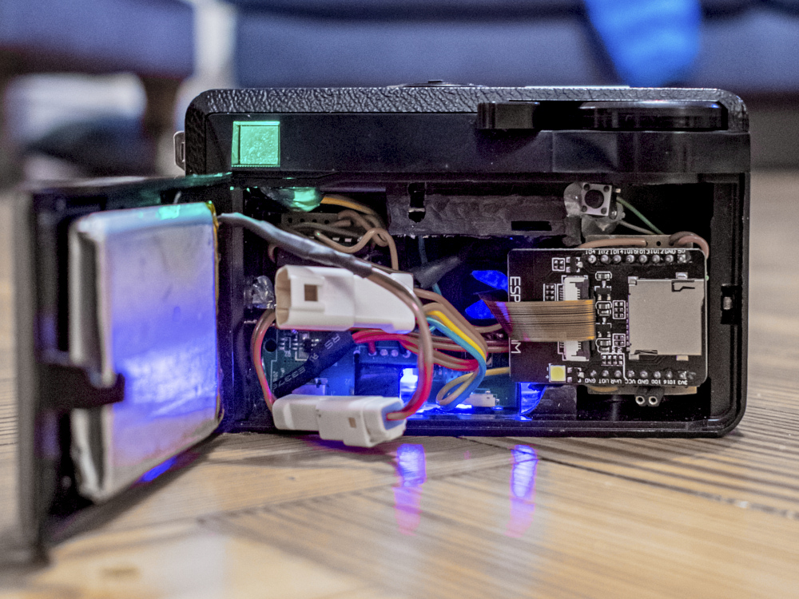
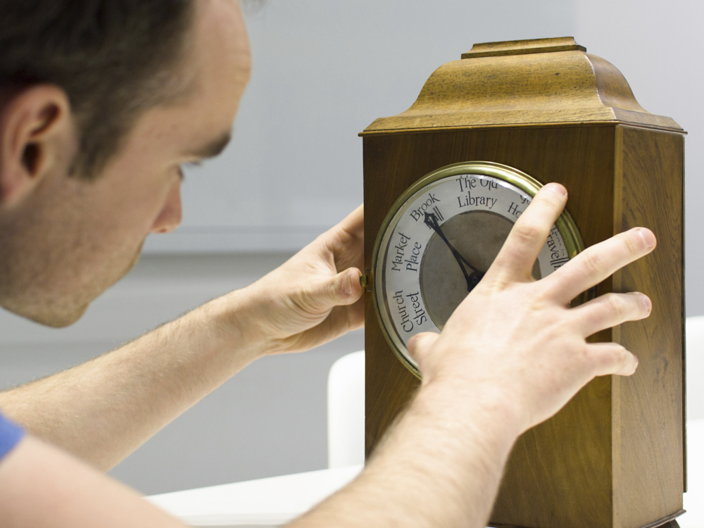
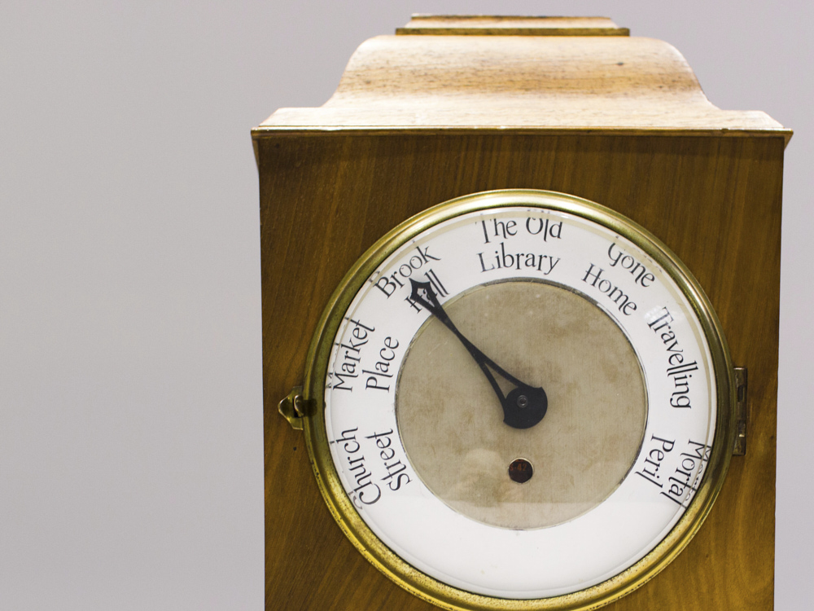

LEGO QR codes
The latest iOS and Android variants can detect QR codes automatically through the installed camera apps. I built a QR code containing the credentials for our home WiFi, thanks to a bulk purchase of 1x1 stud bricks from Bricklink. 1681 bricks later and my wife has to tolerate this artwork on our living room wall.


Physical Instagram camera
Reinventing the analog magic of the Kodak Instamatic for the digital age. Using an ESP32 camera module and a lot of mechanical modifications. The original advance film & shutter mechanism triggers a new photo capture, which is instantly uploaded to Instagram. For added effect, the poor low-light performance of the cameras provides stylistically blurred images.


Real-life Weasley Clock
Most large companies log entry & exit using keycard fobs. Using data scraped from our corporate intranet, I built a working version of the Weasley Family's Clock from the Harry Potter series. The servo motor control for the hand is very limited, which fortunately means I'll never end up in Mortal Peril.